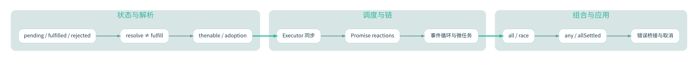

Promise
从原理到
工程实践。
将 Promise 拆解为状态、解决流程、Jobs、微任务与链式传播五层：不靠背输出题，也不靠现实类比替代真实机制。内容从你的第 1—14 课课程轨迹出发，扩展成可验证的专题教材。
resolved ≠ settled
reactions → jobs → microtasks

展开 Mermaid 流程图源代码
flowchart LR
classDef stem fill:#0d3d49,color:#ffffff,stroke:#0f8081,stroke-width:2px;
classDef core fill:#edf8f6,color:#10445b,stroke:#79b7b8,stroke-width:1.4px;
subgraph G0["01 · 对象与状态"]
P["Promise 对象"]
S["三状态机"]
L["resolved ≠ settled"]
A["thenable 采用"]
end
subgraph G1["02 · 回调与调度"]
X["executor 同步"]
R["reactions 注册"]
J["Promise Jobs 入队"]
Q["微任务检查点"]
end
subgraph G2["03 · 链与组合"]
T["then / catch / finally"]
W["async / await"]
C["all / race"]
N["any / allSettled"]
end
subgraph G3["04 · 实战与学习"]
E["错误桥接"]
K["Abort / 超时"]
H["Browser / Node"]
D["螺旋诊断"]
end
P --> S
S --> L
L --> A
A --> J
X --> R
R --> J
J --> Q
Q --> T
T --> W
T --> C
C --> N
N --> D
W --> E
E --> K
Q --> H
H --> D
class P stem;
class S,L,A,X,R,J,Q,T,W,C,N,E,K,H,D core;
从概念到规范，逐单元掌握。
每个单元含可执行代码、机制分析、误区与诊断。旧版三篇概览保留供历史比照，但不再代替完整教程。
导学与机制地图
把 Promise 拆成五层观察：对象状态、解决权、反应注册、Jobs 入队与宿主调度。
深入学习 ↗LESSON / 01Promise 状态机与解决权
三种状态之外，理解 resolved、settled、adoption 与不可逆。
深入学习 ↗LESSON / 02构造器、then 与作业模型
分清 executor、注册反应、入队与运行四个独立事件。
深入学习 ↗LESSON / 03Promise Resolution Procedure
then 属性读取同步，thenable 执行异步；首次调用锁定结果。
深入学习 ↗LESSON / 04微任务、队列与时间线
按实际入队时刻追踪，不以代码外观排序。
深入学习 ↗LESSON / 05then 链、返回值与错误传播
每次 then 都生成新 Promise；值、throw、thenable 决定下游。
深入学习 ↗LESSON / 06catch、finally 与异常边界
finally 保留结果有条件；异步 timer 抛错不属于外层 Promise。
深入学习 ↗LESSON / 07async / await 的解糖模型
async 总返回 Promise，await 让函数暂停而不是阻塞线程。
深入学习 ↗LESSON / 08Promise.all：全成功或早拒绝
输入迭代与任务启动的边界；拒绝不等于取消其他操作。
深入学习 ↗LESSON / 09Promise.race：先落定者胜出
race 对 fulfilled/rejected 没有偏好，空迭代永不落定。
深入学习 ↗LESSON / 10Promise.any：至少一个兑现
AggregateError.errors 的顺序由输入索引决定，而不是拒绝时间。
深入学习 ↗LESSON / 11Promise.allSettled：全局快照
每项状态结果按输入序排列，不因为失败而提前结束。
深入学习 ↗LESSON / 12Browser 与 Node.js 的宿主调度
区分 ECMAScript Jobs、浏览器微任务与 Node nextTick；不要跨环境套公式。
深入学习 ↗LESSON / 13工程实践：取消、超时与失败恢复
Promise 的取消不是内建能力；把底层资源控制与组合结果分开。
深入学习 ↗LESSON / 14综合推演：thenable × inner × race
复现历史重点难题，分离 getter、采用、微任务和日志。
深入学习 ↗LESSON / 15历史课程诊断档案
按第 1—14 课重建可核实进度、错误直觉和待复习点，不虚构逐字原题。
深入学习 ↗LESSON / 16诊断题库：先作答，再看解析
16 道新编可验证题，围绕状态、采用、组合 API 和错误传播。
深入学习 ↗LESSON / 17ECMAScript 规范解剖：内部槽与抽象操作
从 Promise Objects、Reaction Records 到 NewPromiseResolveThenableJob 的规范路径。
深入学习 ↗LESSON / 18并发测试与错误监控
从可重复的日志实验走向受控延迟、Fake Timers 与拒绝链诊断。
深入学习 ↗LESSON / 19迁移到真实业务：任务生命周期
为 UI、请求、批量执行设计可取消、可观测、可维护的异步边界。
深入学习 ↗看得见的微任务队列。
把同步代码、Jobs 入队和回调执行拆成单独的帧；最后由浏览器原生 Promise 实际验证日志。
教学规范依据 ECMAScript 2026 · Promise Objects、MDN · Using promises、MDN · Microtasks 和 Node.js · process。历史学习状态依据已恢复的会话线索及既有知识库笔记，并非逐字完整聊天备份。你可以查看 站点来源说明。